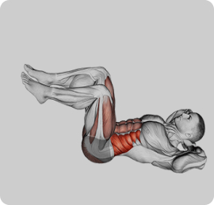

<div class="modal">
  <div class="modal-inner">
    <div class="modal-image">
      
    </div>

    <!-- Right Column: Content -->
    <div class="modal-content">
      <!-- Header with Title and Rating -->
      <div class="modal-header">
        <h2 class="modal-title">Air Bake</h2>
        <div class="modal-rating">
          <span>4.0</span>
          <div class="stars">
            <svg class="rate-icon" width="18" height="18">
              <use href="./img/sprite.svg#stars"></use>
            </svg>
            <svg class="rate-icon" width="18" height="18">
              <use href="./img/sprite.svg#stars"></use>
            </svg>
            <svg class="rate-icon" width="18" height="18">
              <use href="./img/sprite.svg#stars"></use>
            </svg>
            <svg class="rate-icon" width="18" height="18">
              <use href="./img/sprite.svg#stars"></use>
            </svg>
            <svg class="rate-icon" width="18" height="18">
              <use href="./img/sprite.svg#stars"></use>
            </svg>
          </div>
        </div>
        <button class="modal-close" aria-label="Close modal">
          <svg class="modal-close-icon" width="32" height="32">
            <use href="./img/sprite.svg#cross"></use>
          </svg>
        </button>
      </div>

      <!-- Details -->
      <div class="modal-details">
        <p><strong>Target:</strong> Abs</p>
        <p><strong>Body Part:</strong> Waist</p>
        <p><strong>Equipment:</strong> Body weight</p>
        <p><strong>Popular:</strong> 150</p>
        <p><strong>Burned Calories:</strong> 323/3 min</p>
      </div>

      <!-- Description -->
      <div class="modal-description">
        <p>
          This refers to your core muscles, which include the rectus abdominis,
          obliques, and transverse abdominis. They're essential for maintaining
          posture, stability, and generating force in many movements. Exercises
          that target the abs include crunches, leg raises, and planks.
        </p>
      </div>

      <!-- Footer -->
      <div class="modal-footer">
        <button class="modal-favorite">
          <svg class="heart-icon" width="28" height="28">
            <use href="./img/sprite.svg#heart"></use>
          </svg>
          Add to favorites
        </button>
        <button class="modal-rating-button">Give a rating</button>
      </div>
    </div>
  </div>
</div>
